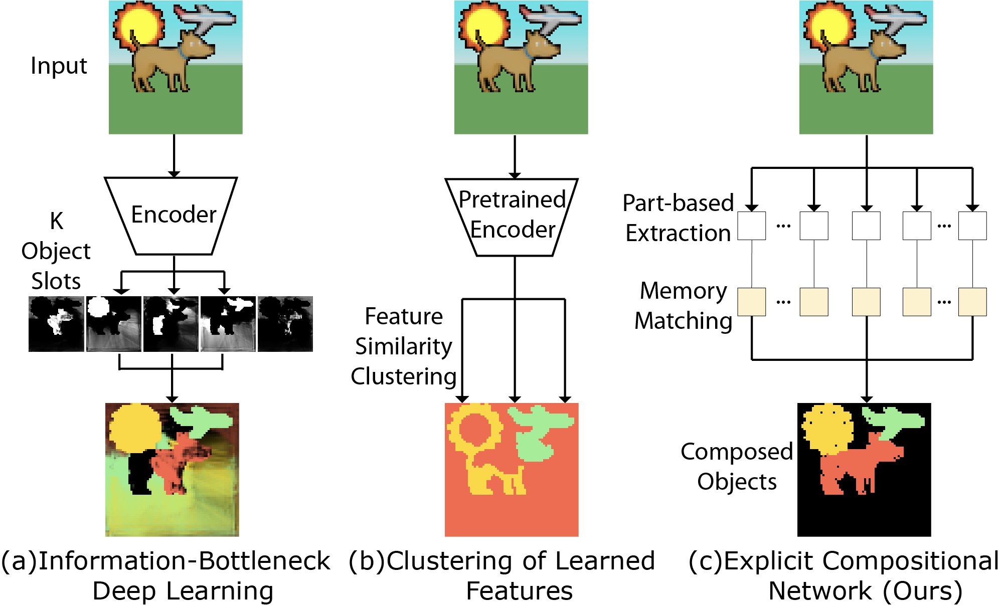
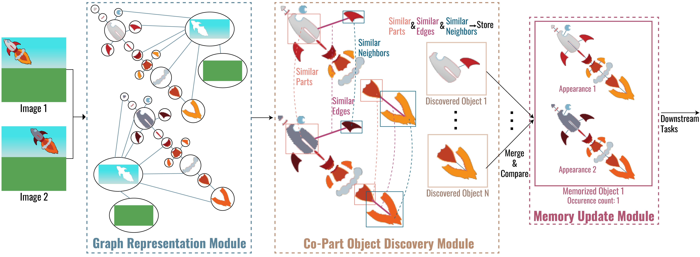
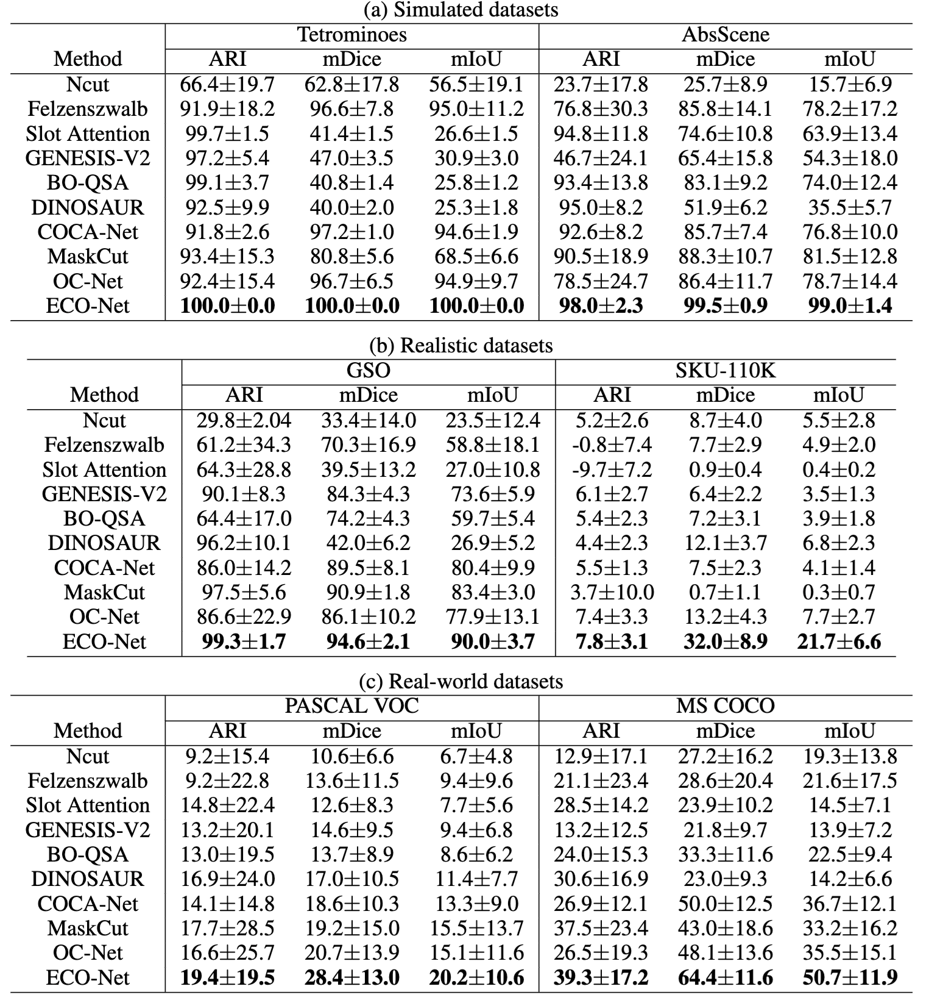
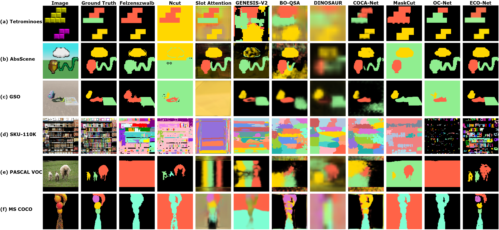
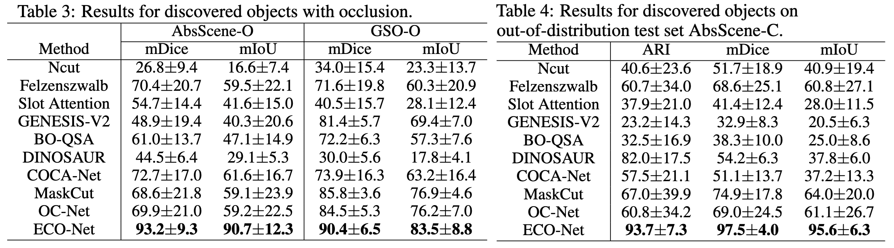
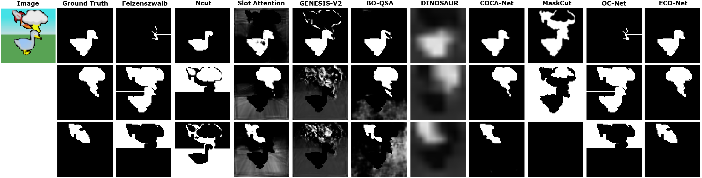
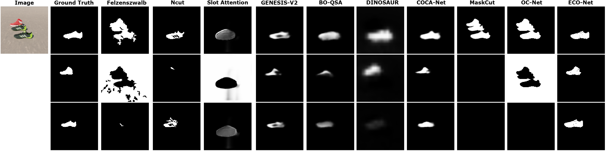
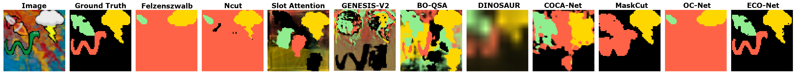

Explicit graphs
Represent part features as nodes and spatial relationships as edges.
ECO-Net
School of Computing, National University of Singapore
Discovering multi-part objects through explicit graphs,
co-part discovery, and part-centric regularization.
Implicit part–whole representations can fail under occlusion and distribution shifts. ECO-Net makes part features and spatial relationships explicit, then discovers objects from recurring co-part structure.

Discovering object-centric representations from images can significantly enhance the robustness, sample efficiency and generalizability of vision models. Works on images with multi-part objects typically follow an implicit object representation approach, which fails to recognize these learned objects in occluded or out-of-distribution contexts. This is due to the assumption that object part-whole relations are implicitly encoded into the representations through indirect training objectives. We address this limitation by proposing a novel method that uses explicit graph representations for parts and introduces a new co-part algorithm for multi-part object discovery. The part representations are refined with a part-centric regularization objective. We then introduce three benchmarks to evaluate the robustness of object-centric methods in recognizing multi-part objects within occluded and out-of-distribution settings. Experimental results on simulated, realistic, and real-world images show marked improvements in the quality of discovered objects compared to state-of-the-art methods, as well as the accurate recognition of multi-part objects in occluded and out-of-distribution contexts. We also show that the discovered object-centric representations can more accurately predict key multi-part object properties in a downstream task, highlighting the potential of our method to advance the field of object-centric representations.
Represent part features as nodes and spatial relationships as edges.
Group recurring parts with similar spatial relationships into objects.
Evaluate multi-part object recognition under occlusion and out-of-distribution conditions.


Visualization of Co-Part Object Discovery Algorithm on Tetrominoes and AbsScene samples.
Preview unavailable. Add the video files or use the download link below.
Preview unavailable. Add the video files or use the download link below.
Evaluation on simulated, realistic, and real-world images, including occluded and out-of-distribution settings.






@inproceedings{foo2026multipart,
title = {Multi-Part Object Representations via Graph Structures and Co-Part Discovery},
author = {Foo, Alex and Hsu, Wynne and Lee, Mong-Li},
booktitle = {Advances in Neural Information Processing Systems},
year = {2026}
}